United Kingdom
Rolls-Royce
Charles Rolls and Henry Royce met in 1904 and founded Rolls-Royce in 1906. The brand is the reference in luxury cars, built by hand in Goodwood.
- Founded
- 1906
- Models
- 34
- Generations
- 37
- In production
- 5
- generations
- Photos
- 33
Range
Electric
Heritage

All models and generations
34 models, each with all its generations.
In production
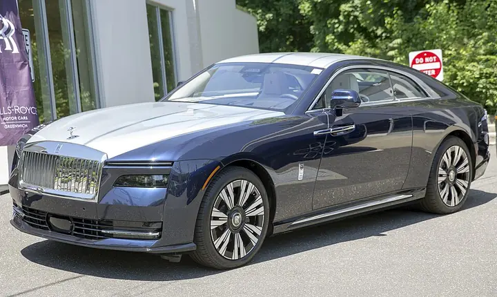
Rolls-Royce Spectre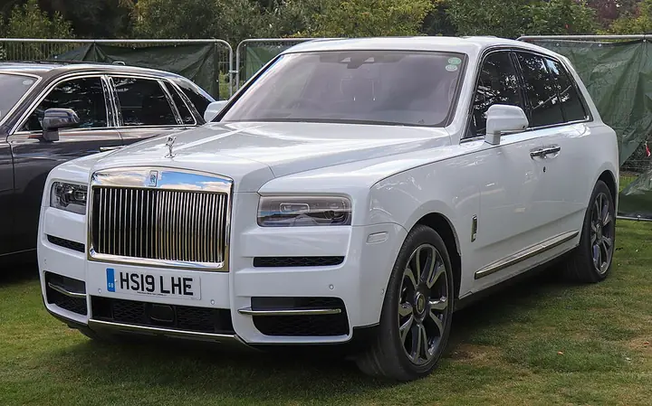
Rolls-Royce Cullinan Rolls-Royce Phantom VIII
Rolls-Royce Phantom VIII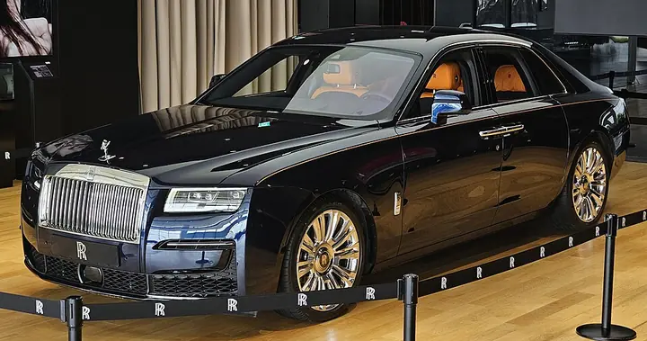
Rolls-Royce Ghost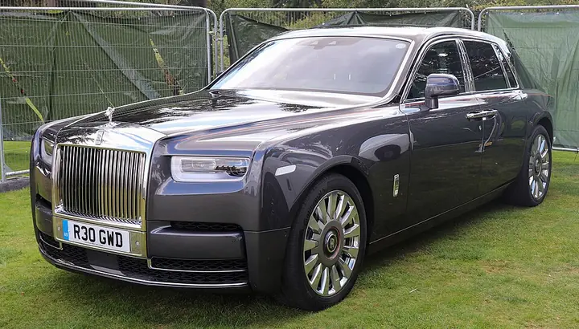
Rolls-Royce Phantom
Past models
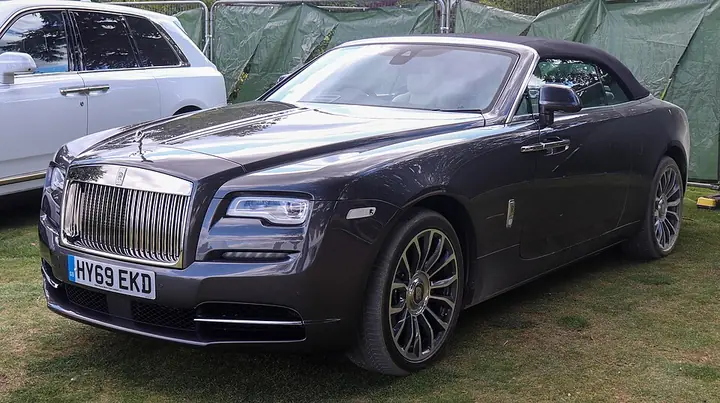
Rolls-Royce Dawn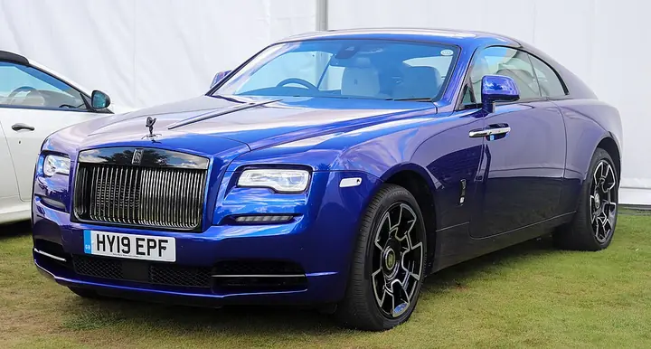
Rolls-Royce Wraith Rolls-Royce Phantom VII
Rolls-Royce Phantom VII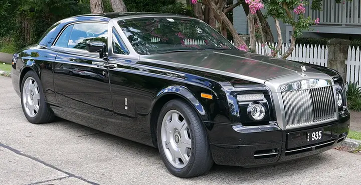
Rolls-Royce Phantom Coupé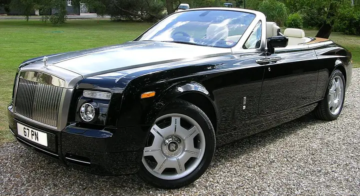
Rolls-Royce Phantom Drophead Coupé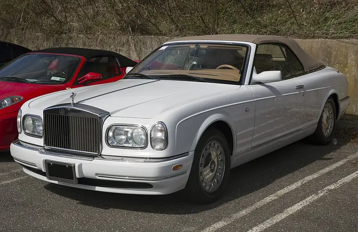
Rolls-Royce Corniche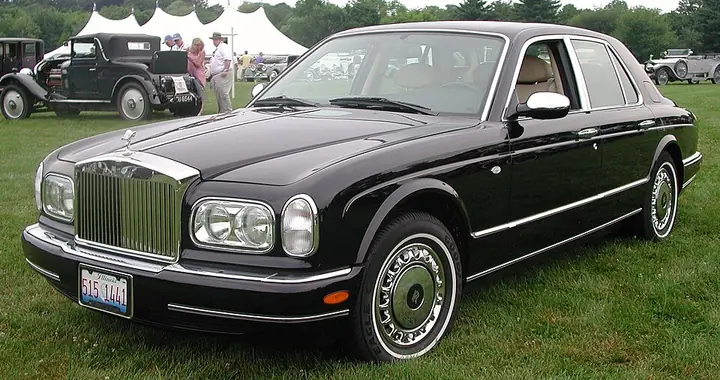
Rolls-Royce Silver Seraph Rolls-Royce Silver Spirit
Rolls-Royce Silver Spirit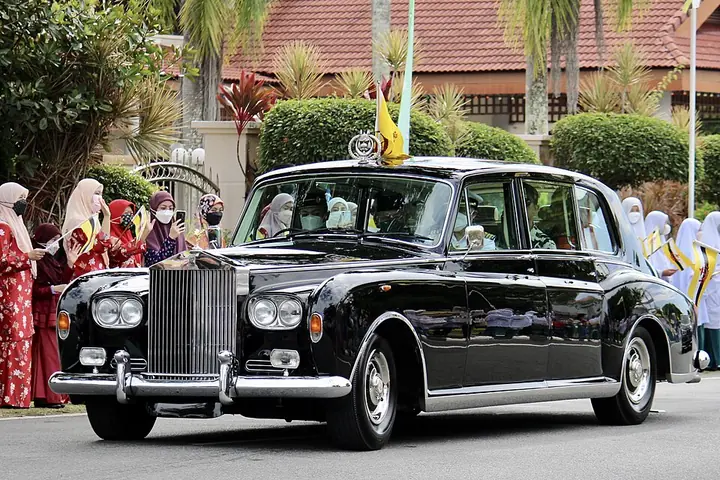
Rolls-Royce Phantom VI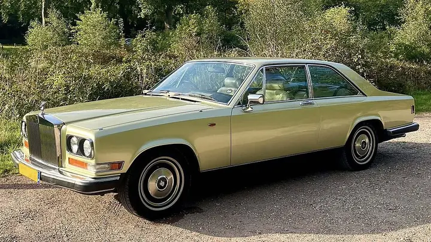
Rolls-Royce Camargue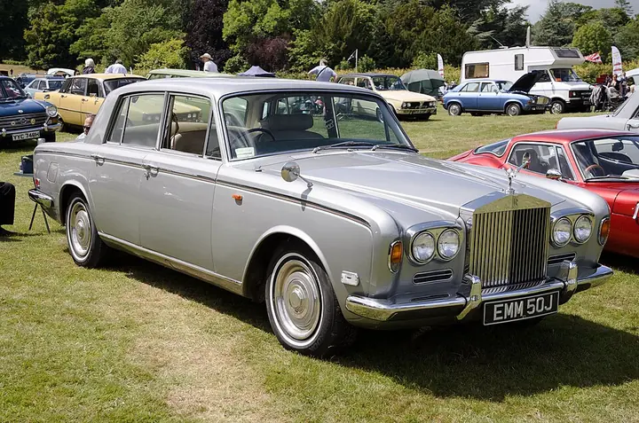
Rolls-Royce Silver Shadow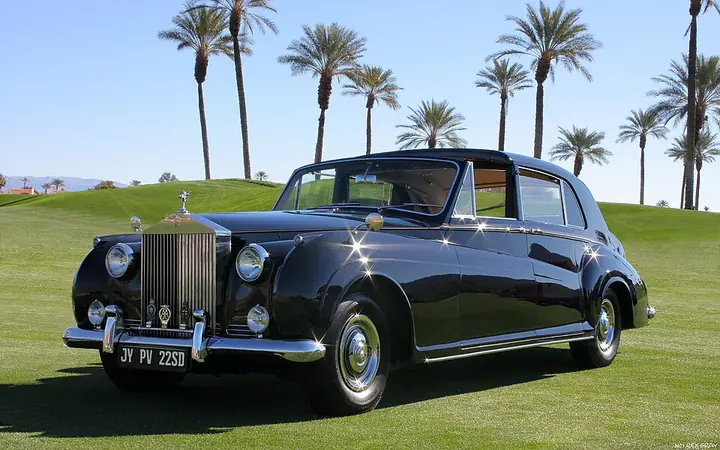
Rolls-Royce Phantom V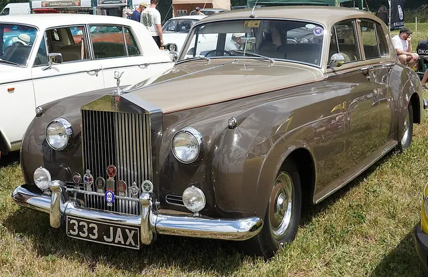
Rolls-Royce Silver Cloud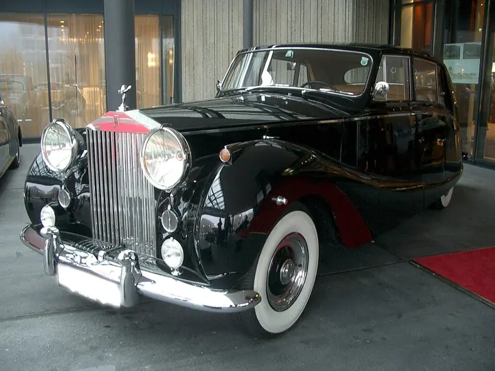
Rolls-Royce Silver Wraith- Rolls-Royce Phantom IV
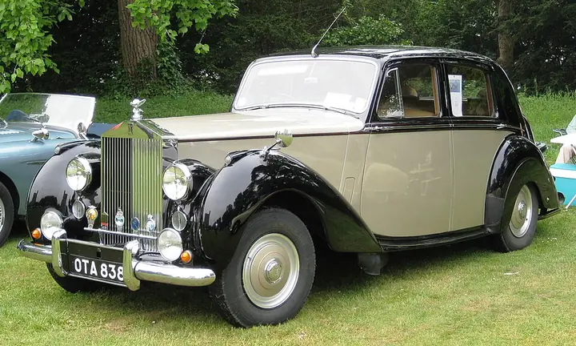
Rolls-Royce Silver Dawn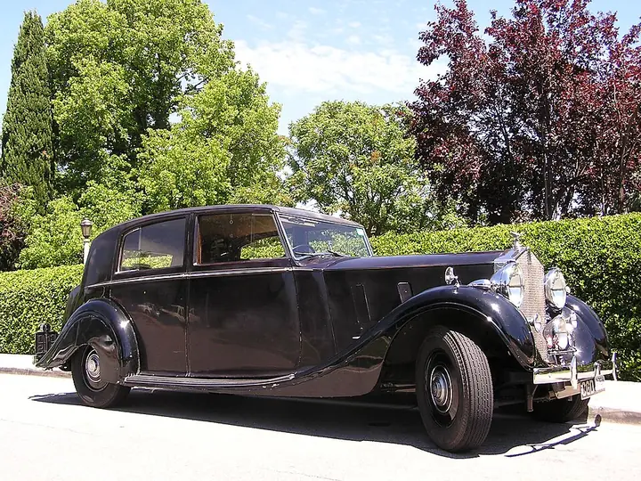
Rolls-Royce Phantom III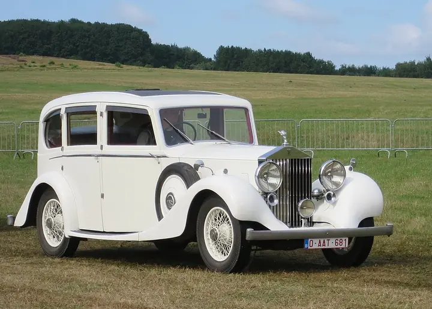
Rolls-Royce 25/30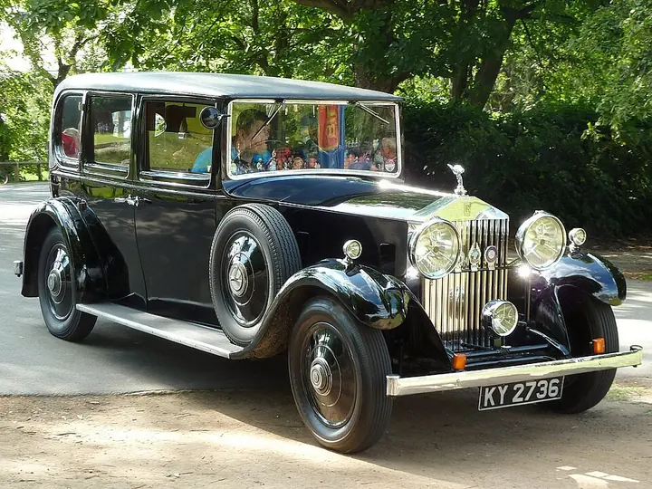
Rolls-Royce 20/25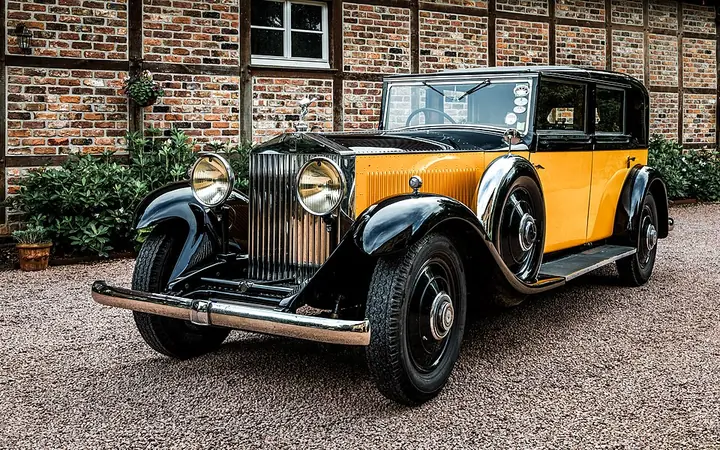
Rolls-Royce Phantom II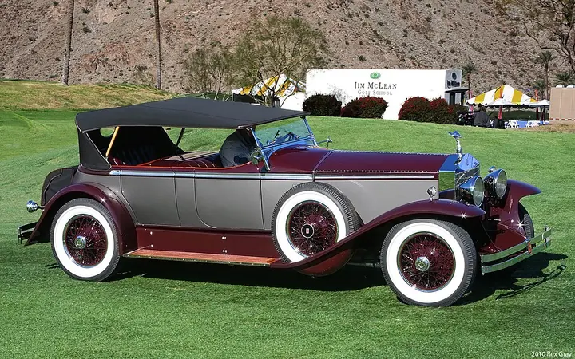
Rolls-Royce Phantom I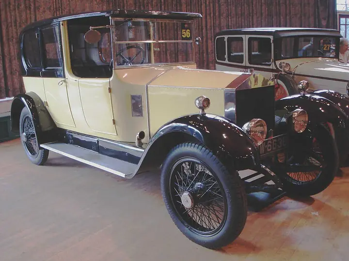
Rolls-Royce Twenty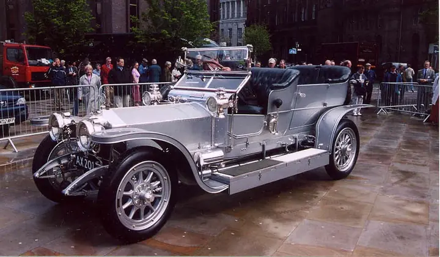
Rolls-Royce Silver Ghost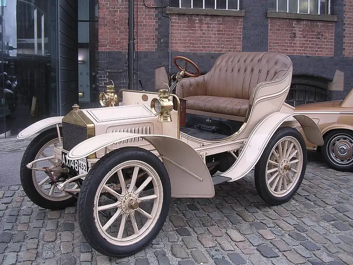
Rolls-Royce 10 hp- Rolls-Royce 20 hp
- Rolls-Royce 30 hp
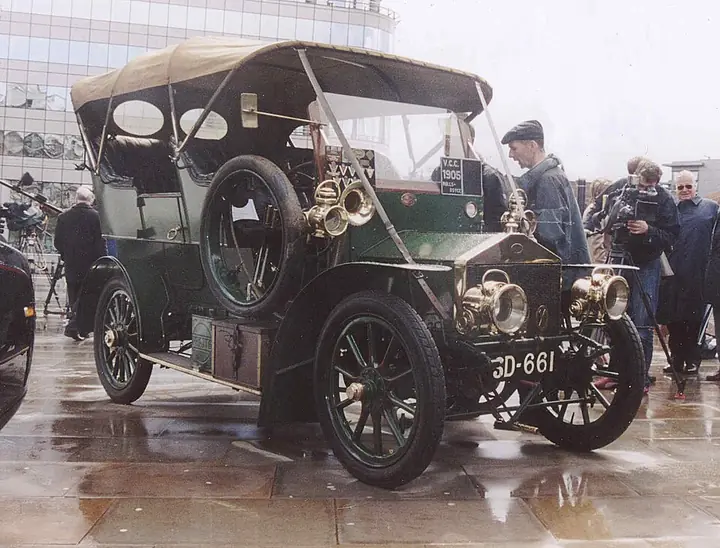
Rolls-Royce 15 hp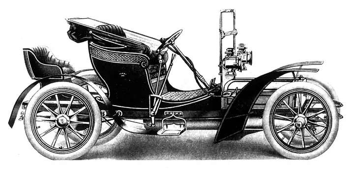
Rolls-Royce V-8- Rolls-Royce Silent Shadow
Source: Wikipedia, CC BY-SA 4.0.